Chapter 2: Getting Data In: Encoding & State Preparation¶
A quantum model can only learn from data it can load, and loading is often the hardest and most expensive step. This chapter covers why data loading is the bottleneck, the main encodings — basis, amplitude, angle, IQP/ZZ feature maps, data re-uploading and Hamiltonian evolution — the QRAM proposals that many speed-ups assume, the difference between classical and quantum data, the Fourier-series view of how encodings shape expressivity, dimensionality reduction, qubit and depth budgets, and how to choose an encoding for real data, finishing with worked examples you can check by hand.
2.1 Why Data Loading Is the Bottleneck¶
Before a quantum computer can learn from data, the data must be turned into a quantum state — and that step is often the most expensive part. Loading N arbitrary numbers generally needs on the order of N gates, so if the quantum 'processing' is exponentially fast but loading is slow, the overall speed-up vanishes. Reading answers back out is similarly costly.

Think of it like…
It is like owning a super-fast blender that you can only fill one grain of rice at a time through a tiny funnel: the blending takes a second, but the filling takes all day.
Real-world example
Mei wants to classify 1,024-pixel images with amplitude encoding on 10 qubits. The classifier circuit has 40 gates, but preparing each image state needs roughly 1,000 CNOTs — 25 times more. On a device with 99.5% two-qubit fidelity the loading alone would scramble the state, so she switches to 8 PCA features in an angle encoding.
How it works¶
- Count the numbers to load per data point (features d) and per dataset (m points).
- Estimate the gates and depth your encoding needs for d features.
- Multiply by shots and training iterations: each circuit run reloads the data.
- Compare loading cost with processing cost and with the classical alternative.
- Choose cheaper encodings, compress data first, or accept that speed-up claims need QRAM.
Who uses it
QML researchers, algorithm designers estimating resources and reviewers checking speed-up claims face this bottleneck.
Key takeaway
Memorise the rule: a generic state with N amplitudes needs Ω(N) gates to prepare — so 'log N qubits' never means 'log N time' without special structure or QRAM.
Going deeper
- Exact preparation of an arbitrary n-qubit state needs on the order of 2^n CNOTs; Plesch and Brukner (2011) reached about (23/24)·2^n, close to the known lower bound.
- Every shot repeats state preparation, so loading cost multiplies by shots × data points × optimisation steps — often 10^6-10^9 preparations during NISQ training.
- Dequantisation results show that if classical algorithms get the same 'sample and query' access assumed for QRAM, many claimed exponential speed-ups disappear (Tang 2018; Chia et al. 2020).
- Speed-ups survive more easily when data is generated inside the quantum computer — by a simulation, an oracle or a physical process — because no classical loading step is needed.
- Readout limits are just as strict: estimating an expectation to precision ε needs about 1/ε² shots, and full state tomography of n qubits needs exponentially many measurements.
Common mistakes & misconceptions
- Counting only the processing gates and calling the algorithm exponentially fast.
- Forgetting that each shot reloads the data — loading cost is paid millions of times during training.
- Assuming amplitude encoding is cheap because it uses few qubits: qubits are few, gates are many.
Key algorithms, circuits, techniques, tools & papers¶
| Name | What it does | Example |
|---|---|---|
| Input problem Aaronson 2015 and others · Concept · Current · Beginner |
The cost of converting classical data into quantum states, which can cancel quantum processing speed-ups. | A linear solver running in log N time still needs N steps to load an N-entry vector. |
| State preparation Quantum circuit synthesis · Concept · Current · Beginner |
Building a circuit that maps |0…0⟩ to a desired state; the general task behind every encoding. | Preparing (0.6, 0, 0.8, 0) needs a single RY rotation; a random 16-amplitude state needs many CNOTs. |
| Ω(N) loading lower bound Counting argument (parameter count) · Theorem · Current · Intermediate |
An arbitrary N-amplitude state has about 2N real parameters, so a circuit preparing every such state needs about N gates. | A generic 20-qubit state (about 10^6 amplitudes) cannot be prepared with only 100 gates. |
| Readout (output) problem Aaronson 2015 · Concept · Current · Beginner |
Extracting many numbers from a quantum state needs many measurements; tomography of n qubits scales roughly as 4^n. | Reading all 1,024 amplitudes of a 10-qubit output to 1% precision needs millions of shots. |
| Reloading per shot NISQ execution model · Concept · Current · Beginner |
Measurement destroys the state, so the encoding circuit runs again for every shot and every training step. | 1,000 shots × 100 training points × 200 steps means 20 million state preparations. |
| QRAM assumption Giovannetti, Lloyd & Maccone 2008 · Concept · Research · Intermediate |
Many speed-up claims assume a quantum memory that loads superpositions of data in O(log N) time; no such device exists at scale. | Quantum recommendation algorithms assumed QRAM-style access to the preference matrix. |
| Unary data loaders Johri et al., npj Quantum Information 2021 (QC Ware / IonQ) · Technique · Research · Intermediate |
Load a d-dimensional vector into d qubits with d−1 two-qubit RBS gates and logarithmic depth using unary amplitude encoding. | An 8-dimensional vector is loaded with 7 RBS gates in depth 3 for a nearest-centroid classifier. |
| Ancilla-assisted shallow preparation e.g. Zhang, Li & Yuan, PRL 2022 · Technique · Research · Advanced |
Trades many extra qubits for depth: arbitrary states in depth linear in n using exponentially many ancillas. | Reaching depth O(n) for a 10-qubit state needs on the order of 1,000 ancilla qubits. |
| Approximate state preparation MPS-based and variational loading · Technique · Current · Intermediate |
Preparing a close approximation instead of the exact state to cut gates, accepting small fidelity loss. | A smooth 1D signal is loaded at 99% fidelity with a 2-layer MPS-style circuit instead of an exact one. |
| Grover-Rudolph loading Grover & Rudolph, arXiv:quant-ph/0208112 (2002) · Algorithm · Research · Advanced |
Efficiently prepares states encoding probability distributions whose partial integrals can be computed efficiently, such as log-concave ones. | Loading a Gaussian for quantum Monte Carlo option pricing, if integrals per bin are cheap. |
| qGAN distribution loading Zoufal, Lucchi & Woerner, npj Quantum Information 2019 · Technique · Research · Intermediate |
Trains a shallow circuit with a GAN to approximately load a probability distribution learned from samples. | A 3-qubit generator learns a log-normal asset-price distribution for option pricing. |
| End-to-end cost accounting Resource-estimation practice · Technique · Current · Intermediate |
Adding loading, processing, readout, shots and repetitions before claiming any speed-up. | A team's spreadsheet shows loading is 80% of total gate count, so they redesign the encoding. |
2.2 Basis Encoding: Data as Bitstrings¶
Basis encoding writes a classical bitstring directly into qubits: bit 1 means flip that qubit with an X gate, bit 0 means leave it alone. It is the simplest encoding — one qubit per bit — and is how integers, binary features and optimisation variables enter algorithms. It can also, in principle, place a whole dataset in superposition, one bitstring per term.

Think of it like…
It is like a row of light switches: to store the number 5 (binary 101) you flip the first and third switches on and leave the middle one off.
Real-world example
Kofi encodes a loan applicant with three yes/no features — homeowner (1), prior default (0), salaried (1) — as |101⟩ using X gates on qubits 0 and 2. A 4-bit fixed-point income uses four more qubits, so seven qubits hold the applicant without any rotations.
How it works¶
- Convert each feature to binary (booleans directly; numbers via fixed-point or integer binary).
- Allocate one qubit per bit: d features at b bits each need d × b qubits.
- Apply X to every qubit whose bit is 1; the state is the basis state |bitstring⟩.
- Optionally prepare superpositions of many bitstrings (whole datasets) with QRAM-like circuits.
Who uses it
Optimisation (QUBO/QAOA), arithmetic-based quantum algorithms and binary-feature classifiers use basis encoding.
Key takeaway
Remember the trade-off: basis encoding is shallow (only X gates) but qubit-hungry — 10 features at 8-bit precision need 80 qubits.
Going deeper
- Basis encoding has depth 1 and no entangling gates for a single data point, making it the most hardware-friendly encoding but the most qubit-hungry.
- Because distinct basis states are orthogonal, a fidelity kernel on basis-encoded data is a Kronecker delta; useful models must add processing that mixes basis states.
- Superpositions of many basis-encoded data points need QRAM-like circuits; with M patterns of n bits, generic circuits cost on the order of M × n gates.
- Fault-tolerant algorithms such as amplitude estimation for finance often hold intermediate values in basis-encoded registers and use reversible arithmetic, consuming many ancilla qubits.
- PennyLane's BasisEmbedding and Qiskit's QuantumCircuit.x calls are the usual implementations; integers are converted to bits in a fixed, documented order.
Common mistakes & misconceptions
- Forgetting bit ordering conventions: Qiskit reads qubit 0 as the rightmost bit, PennyLane as the leftmost.
- Expecting basis-encoded kernels to measure similarity: orthogonal states give zero overlap for any difference.
- Using basis encoding for real-valued features without counting the qubits that precision demands.
Try it: Basis-encode 5 = 101 in PennyLane¶
import pennylane as qml
dev = qml.device('default.qubit', wires=3)
@qml.qnode(dev)
def circuit():
qml.BasisEmbedding(features=[1, 0, 1], wires=range(3))
return qml.probs(wires=range(3))
print(circuit()) # probability 1.0 at index 5 (|101⟩)
Key algorithms, circuits, techniques, tools & papers¶
| Name | What it does | Example |
|---|---|---|
| Basis encoding Standard encoding (Schuld & Petruccione) · Encoding · Current · Beginner |
Maps a bitstring b to the computational basis state |b⟩ using X gates; one qubit per bit. | The integer 6 becomes |110⟩ with X on the first two qubits. |
| qml.BasisEmbedding / qml.BasisState PennyLane (Xanadu) · Library · Current · Beginner |
PennyLane templates preparing a basis state from a list of bits or an integer. | qml.BasisEmbedding(features=[1,0,1], wires=range(3)) prepares |101⟩. |
| Fixed-point binary representation Classical numeric formats · Math · Current · Beginner |
Representing real numbers with a fixed number of integer and fractional bits so they fit basis encoding. | 0.625 with 3 fractional bits is 0.101 in binary, stored as |101⟩. |
| Superposition of a dataset Quantum associative memory ideas, e.g. Ventura & Martinez 2000 · Concept · Research · Intermediate |
Preparing (1/√M)Σ|x_m⟩ so one state contains all M training bitstrings, each with equal amplitude. | Four 3-bit patterns stored as an equal superposition over |001⟩, |011⟩, |100⟩, |110⟩. |
| One-hot (unary) encoding Categorical data practice · Encoding · Current · Beginner |
Uses one qubit per category with exactly one set to 1; more qubits but simple constraints. | Colour ∈ {red, green, blue} uses 3 qubits: green is |010⟩. |
| Binary (logarithmic) categorical encoding Categorical data practice · Encoding · Current · Beginner |
Stores category indices in ⌈log₂ K⌉ qubits; compact but neighbouring codes are not semantically close. | Eight product types fit in 3 qubits: type 5 is |101⟩. |
| Gray code Frank Gray, Bell Labs (patent 1953) · Math · Current · Intermediate |
Binary ordering where consecutive numbers differ in one bit; reduces gate changes in some state-preparation circuits. | Uniformly controlled rotations are ordered by Gray code to cancel CNOTs. |
| Ising/QUBO variable encoding Optimisation formulations · Encoding · Current · Beginner |
Binary decision variables map directly to qubits; spin z = 1 − 2b links bits to Ising spins. | Selecting features 2 and 5 of 6 is the bitstring 010010, i.e. one basis state. |
| Quantum arithmetic on basis states Reversible circuits (Vedral et al. 1996 and others) · Technique · Research · Advanced |
Adders and multipliers act on basis-encoded numbers, enabling arithmetic inside fault-tolerant algorithms. | A quantum adder computes |a⟩|b⟩ → |a⟩|a+b⟩ for 8-bit registers. |
| Binary feature classifiers NISQ demonstrations · Model · Research · Beginner |
Classifiers taking binary inputs, such as parity or bars-and-stripes patterns, where basis encoding is natural. | A circuit learns 4-bit parity from basis-encoded inputs. |
| Qubit cost of precision Encoding budget · Metric · Current · Beginner |
Each extra bit of precision costs one more qubit per feature, so basis encoding scales linearly with precision. | Moving from 4-bit to 8-bit precision for 6 features adds 24 qubits. |
| Kernel of basis encoding Fidelity kernel · Math · Current · Intermediate |
Distinct basis states are orthogonal, so the fidelity kernel is 1 for identical inputs and 0 otherwise — useless alone. | |⟨101|100⟩|² = 0, so an SVM sees no similarity between nearly identical inputs. |
2.3 Amplitude Encoding: Exponential Compression, Exponential Circuit Cost¶
Amplitude encoding stores a normalised vector of N numbers in the amplitudes of just log₂N qubits. That is a huge compression — a million numbers fit in 20 qubits — and many fault-tolerant algorithms assume it. The catch is that preparing such a state for arbitrary data generally needs about N gates, and the numbers cannot be read back cheaply.
Amplitude encoding: what you gain and pay
| N = 16 numbers | N = 1,048,576 numbers | |
|---|---|---|
| Qubits needed | 4 | 20 |
| Generic CNOTs (≈2^n) | ≈15 | ≈10^6 |
| Angle-encoding qubits | 16 | ≈10^6 |
| Readout per amplitude | ≈1/ε² shots each | ≈1/ε² shots each |
| Practical on NISQ? | Yes, for small N | No |
Qubits shrink exponentially; gates do not.
Think of it like…
It is like vacuum-packing a duvet into a tiny bag: it fits in a small space, but sealing it takes effort, and you cannot see the pattern on the duvet without unpacking it.
Real-world example
Aditya amplitude-encodes the vector (3, 0, 4, 0). After normalising by its length 5 it becomes (0.6, 0, 0.8, 0), which needs only 2 qubits. Since entries 1 and 3 are zero, a single RY(2·arccos 0.6) = RY(1.855) on the first qubit prepares it. A random 4-vector would need extra rotations and CNOTs.
How it works¶
- Pad the vector with zeros to length N = 2^n.
- Normalise it to unit length (the original norm is lost unless stored separately).
- Decompose into a tree of controlled rotations (Möttönen-style uniformly controlled rotations) or use a library routine.
- Run the circuit: about 2^n CNOTs for generic data, far fewer for structured or sparse vectors.
- Process and measure; remember outputs are again amplitudes needing many shots to estimate.
Who uses it
Fault-tolerant algorithm designers (HHL, quantum PCA, QSVT) and researchers compressing images or signals into few qubits use amplitude encoding.
Key takeaway
Memorise both halves: n qubits hold 2^n amplitudes (compression), but generic preparation needs about 2^n gates (no free lunch).
Going deeper
- A generic n-qubit state has 2^(n+1) − 2 real degrees of freedom, which is why state preparation needs on the order of 2^n gates and why depth scales badly on NISQ devices.
- The global norm of the input is lost on normalisation; common fixes add the norm as an extra amplitude or feature so models can distinguish (1,1) from (10,10).
- Signs and complex phases are supported: real negative values need RY rotations with angles beyond π/2, complex values need extra RZ rotations, which Möttönen's method handles.
- The fidelity kernel |⟨x|x'⟩|² of amplitude-encoded data equals squared cosine similarity, a classical kernel, so the encoding alone offers no quantum advantage.
- Fault-tolerant algorithms usually assume amplitude encoding via QRAM in O(log N) depth; without QRAM, Ω(N) preparation removes their exponential speed-ups for classical data.
Common mistakes & misconceptions
- Equating 'log N qubits' with 'log N time': preparation still needs about N gates for generic data.
- Forgetting to pad to a power of two or to normalise; libraries raise errors or silently rescale.
- Losing the vector's magnitude through normalisation when magnitude carries the class information.
Try it: Amplitude-encode (3, 0, 4, 0) and check the state¶
import pennylane as qml
import numpy as np
dev = qml.device('default.qubit', wires=2)
@qml.qnode(dev)
def enc(x):
qml.AmplitudeEmbedding(x, wires=[0, 1], normalize=True)
return qml.state()
print(np.round(enc(np.array([3., 0., 4., 0.])), 3)) # [0.6 0 0.8 0]
print(2*np.arccos(0.6)) # 1.855 rad: the single RY angle that does the same
Key algorithms, circuits, techniques, tools & papers¶
| Name | What it does | Example |
|---|---|---|
| Amplitude encoding Standard encoding (Schuld & Petruccione) · Encoding · Current · Beginner |
Encodes a normalised vector x as |ψ⟩ = Σ x_i |i⟩ across log₂N qubits. | A 256-pixel greyscale image becomes an 8-qubit state after normalising pixel values. |
| Normalisation and padding Pre-processing for amplitude encoding · Technique · Current · Beginner |
Vectors must have unit length and length 2^n; norms are lost unless stored as an extra feature. | (1,2,2) is padded to (1,2,2,0) and divided by 3 → (0.333, 0.667, 0.667, 0). |
| Möttönen state preparation Möttönen, Vartiainen, Bergholm & Salomaa (2004; QIC 2005) · Algorithm · Current · Intermediate |
Prepares any state with cascades of uniformly controlled RY and RZ rotations; CNOT count grows as a few times 2^n. | PennyLane's MottonenStatePreparation template implements this for amplitude embedding. |
| Uniformly controlled rotation Möttönen et al.; Shende, Bullock & Markov 2006 · Technique · Current · Advanced |
A rotation whose angle depends on the state of control qubits; decomposed into 2^k CNOTs and rotations for k controls. | Setting the second qubit's amplitude split separately for each value of the first qubit. |
| Plesch-Brukner bound Plesch & Brukner, PRA 83, 032302 (2011) · Theorem · Current · Advanced |
Generic n-qubit state preparation achievable with about (23/24)·2^n CNOTs, close to the known lower bound. | A generic 10-qubit state needs roughly 980 CNOTs even with the best known decomposition. |
| qml.AmplitudeEmbedding PennyLane (Xanadu) · Library · Current · Beginner |
Template that pads and normalises a vector and prepares it as amplitudes; options pad_with and normalize. | qml.AmplitudeEmbedding(x, wires=range(3), pad_with=0., normalize=True) loads 6 numbers into 3 qubits. |
| Qiskit StatePreparation / initialize Qiskit (IBM) · Library · Current · Beginner |
Qiskit's instruction for preparing an arbitrary state vector, synthesised into gates by the transpiler. | qc.initialize([0.6, 0, 0.8, 0], [0, 1]) prepares the 2-qubit example state. |
| Sparse-state preparation Various (2021-2024 circuit-synthesis papers) · Technique · Research · Advanced |
Circuits whose cost scales with the number of non-zero amplitudes rather than 2^n. | A 20-qubit vector with only 50 non-zero entries is prepared with a few thousand gates instead of a million. |
| Divide-and-conquer state preparation Araujo et al., Scientific Reports 2021 · Technique · Research · Advanced |
Uses extra qubits to prepare amplitude-encoded states in polylogarithmic depth, trading width for depth. | A 16-number vector is loaded in polylogarithmic depth across more qubits, but leaves entangled ancillas behind. |
| Matrix-product-state loading Approximate state-preparation research · Technique · Research · Advanced |
Approximates smooth or low-entanglement vectors as MPS and compiles them into shallow circuits. | Loading a smooth price curve on 12 qubits at 99% fidelity with a few layers of two-qubit gates. |
| Amplitude-encoding kernel Linear kernel in disguise · Math · Current · Intermediate |
The fidelity kernel of amplitude-encoded data is |⟨x|x'⟩|², the squared cosine similarity — computable classically. | Two images with cosine similarity 0.9 give quantum kernel value 0.81. |
| Information loss at readout Holevo bound / tomography cost · Concept · Current · Intermediate |
You cannot read back the stored vector cheaply; estimating each amplitude to precision ε needs about 1/ε² shots. | Recovering 1,024 amplitudes from a 10-qubit state is far slower than reading them from memory. |
| FRQI image representation Le, Dong & Hirota, Quantum Information Processing 2011 · Encoding · Research · Intermediate |
Flexible Representation of Quantum Images: pixel positions in basis states, grey values in one qubit's amplitudes. | A 4×4 image uses 4 position qubits plus 1 colour qubit. |
2.4 Angle (Rotation) Encoding¶
Angle encoding turns each feature into the angle of a rotation gate on its own qubit, for example RY(x₁) on qubit 0 and RY(x₂) on qubit 1. It is cheap — one single-qubit gate per feature, no entangling gates — and works well on today's hardware. The trade-off is one qubit per feature (or two features per qubit with dense variants) and limited expressivity on its own.

Think of it like…
It is like setting a row of dimmer dials, one per feature: each dial's position records one number, and you can read the room's overall brightness pattern later.
Real-world example
Sara scales four sensor features to [0, π] and applies RY(x_i) on four qubits. A reading of x = (0, π/2, π, π/4) gives qubit 0 in |0⟩, qubit 1 halfway, qubit 2 in |1⟩ and qubit 3 mostly |0⟩ (P(1) ≈ 0.15). The state has no entanglement until her trainable layer adds CNOTs.
How it works¶
- Scale features into a range such as [0, π] or [−π, π] so different values give different states.
- Apply one rotation per feature: RX, RY or RZ (RZ needs a Hadamard first to have any effect).
- Optionally use dense angle encoding: two features per qubit via RY then RZ.
- Follow with trainable or entangling layers — the encoding alone yields only a product state.
- Repeat (re-upload) the encoding in several layers if the model needs higher frequencies.
Who uses it
Almost every NISQ variational classifier and many tutorial quantum kernels use angle encoding.
Key takeaway
Key fact: the angle-encoding fidelity kernel is a product of cos² terms — k(x,x') = Π cos²((x_i − x'_i)/2) for RY encoding — so it is classically easy.
Going deeper
- With RY encoding, each qubit's state is cos(x/2)|0⟩ + sin(x/2)|1⟩, so ⟨Z⟩ = cos x and ⟨X⟩ = sin x: a single encoding contributes frequency 1 in each feature.
- Angle encoding has depth 1 and needs no two-qubit gates, making it the most robust encoding on noisy hardware; all entangling cost moves to the processing layers.
- Because the encoded state is a product state, the fidelity kernel factorises into per-feature terms — exactly computable classically — so advantage requires entangling, non-trivial processing.
- Scaling sets the effective kernel bandwidth: for many qubits, unscaled features make states nearly orthogonal, kernel values concentrate near 0, and models generalise poorly.
- Libraries differ in default rotations: PennyLane's AngleEmbedding defaults to RX, while many papers use RY because it produces real amplitudes.
Common mistakes & misconceptions
- Feeding unscaled features (e.g. salaries) into rotations, which wrap around 2π many times and scramble the data.
- Using RZ encoding directly on |0⟩, which has no effect on measurement probabilities.
- Expecting angle encoding alone to be powerful: it is a product state with a classical kernel.
Try it: Angle encoding and its classical kernel¶
import pennylane as qml, numpy as np
dev = qml.device('default.qubit', wires=2)
@qml.qnode(dev)
def state(x):
qml.AngleEmbedding(x, wires=[0, 1], rotation='Y')
return qml.state()
a, b = np.array([0.2, 1.0]), np.array([1.2, 1.0])
print(abs(np.vdot(state(a), state(b)))**2) # quantum fidelity
print(np.prod(np.cos((a - b) / 2)**2)) # same value: 0.770
Key algorithms, circuits, techniques, tools & papers¶
| Name | What it does | Example |
|---|---|---|
| Angle (rotation) encoding Standard encoding · Encoding · Current · Beginner |
Each feature becomes a rotation angle on its own qubit, producing a product state of n qubits for n features. | Feature 0.8 rad becomes RY(0.8)|0⟩ = 0.921|0⟩ + 0.389|1⟩. |
| qml.AngleEmbedding PennyLane (Xanadu) · Library · Current · Beginner |
Template applying RX (default), RY or RZ rotations with features as angles, one per wire. | qml.AngleEmbedding(x, wires=range(4), rotation='Y') encodes 4 features on 4 qubits. |
| Dense angle encoding LaRose & Coyle, PRA 102, 032420 (2020) · Encoding · Current · Intermediate |
Stores two features per qubit, one in the polar angle and one in the phase, halving the qubit count. | Eight features fit on 4 qubits: RY(x₁) then RZ(x₂) on each qubit. |
| Feature scaling to [0, π] Pre-processing · Technique · Current · Beginner |
Rescaling so features span a useful angle range; avoids wrap-around (2π periodicity) and tiny rotations. | Temperatures 10-40 °C map linearly to 0-π radians. |
| Periodicity of rotations Rotation gate property · Concept · Current · Beginner |
RY(x) and RY(x + 4π) are identical (and give the same probabilities after 2π), so features outside the range alias. | Unscaled income values 0-100,000 wrap around thousands of times, destroying information. |
| Product-state limitation Encoding property · Concept · Current · Intermediate |
Angle encoding alone creates no entanglement; any advantage must come from later layers. | Measuring each qubit separately after angle encoding gives independent cosines of each feature. |
| Cosine product kernel Kernel of RY angle encoding · Math · Current · Intermediate |
Fidelity kernel equals Π cos²((x_i − x'_i)/2), a simple classical kernel computable in O(d) time. | Points differing by 1 rad in one feature have kernel cos²(0.5) ≈ 0.770. |
| Input scaling factor (bandwidth) Encoding hyperparameter · Technique · Current · Intermediate |
Multiplying features by a factor before encoding controls how fast the state changes, like an RBF kernel's width. | Scaling features by 0.1 instead of 1.0 stops kernel values collapsing toward zero on 20 qubits. |
| Arctan / nonlinear pre-maps Common heuristics · Technique · Current · Intermediate |
Applying functions such as arctan(x) or arccos(x) before encoding to bound angles or shape the model. | RY(2·arccos(x)) makes ⟨Z⟩ = 2x² − 1, a polynomial of the feature. |
| Trainable encoding weights Data re-uploading practice · Technique · Current · Intermediate |
Learned per-feature multipliers (RY(w·x)) that let training choose each feature's frequency scale. | A model learns w = 2.3 for a fast-varying feature and 0.4 for a smooth one. |
| RZ-only encoding pitfall Gate behaviour · Concept · Current · Beginner |
RZ on |0⟩ only adds a global phase, so it encodes nothing unless preceded by a Hadamard or RY. | AngleEmbedding with rotation='Z' on a fresh |0⟩ returns identical states for every input. |
| Qubit-per-feature budget Encoding budget · Metric · Current · Beginner |
Plain angle encoding needs d qubits for d features (d/2 with dense encoding), so wide data must be reduced first. | A 784-pixel MNIST image would need 784 qubits, so it is reduced to 8-16 features. |
2.5 IQP and ZZ Feature Maps¶
IQP-style feature maps sandwich data-dependent phase gates between layers of Hadamards. The famous ZZ feature map of Havlíček et al. (2019) adds a phase for each feature and for each pair of features, creating entanglement whose pattern depends on products of the data. Circuits of this family are believed hard to simulate classically in general, which is why they were proposed for quantum kernels.

Think of it like…
Imagine a choir where each singer (qubit) adjusts their pitch by their own note (feature) and also harmonises with every partner according to both their notes — the resulting chord encodes how features interact, not just their individual values.
Real-world example
Noah builds a 2-feature ZZ map for x = (0.5, 1.0). He applies H on both qubits, phase gates P(2·0.5) and P(2·1.0), then CNOT–P(2φ)–CNOT with φ = (π − 0.5)(π − 1.0) ≈ 5.66, and repeats the block twice as in Qiskit's default (reps=2). The resulting kernel values feed an SVM.
How it works¶
- Apply Hadamards to put every qubit in superposition.
- Apply single-qubit phases RZ/P(2φ_i(x)) with φ_i = x_i.
- For each connected pair (i, j), apply a ZZ phase exp(−iφ_ij(x) Z_iZ_j), built as CNOT–RZ–CNOT, with φ_ij = (π − x_i)(π − x_j) in the original paper.
- Repeat the Hadamard + phase block (typically 2 times).
- Use the state for a fidelity kernel or follow it with a trainable circuit.
Who uses it
Quantum-kernel researchers, IBM Qiskit users and benchmark studies use ZZ/IQP maps as standard encodings.
Key takeaway
Remember the formula and its origin: Havlíček et al., Nature 2019 — H layer, then exp(i Σφ_S(x) Π Z) with φ_ij = (π − x_i)(π − x_j), repeated twice.
Going deeper
- Gate count for full entanglement is d single-qubit phases plus d(d−1)/2 ZZ terms (2 CNOTs each) per repetition: 8 features × 2 reps gives 112 CNOTs before routing on hardware.
- On nearest-neighbour hardware, full-entanglement maps need SWAP routing, often doubling or tripling CNOT counts; linear or circular patterns fit hardware topologies better.
- Havlíček et al. ran both a variational classifier and a quantum kernel estimator with this map on 2 qubits of an IBM device, using artificial data constructed to be separable by the map.
- IQP structure means all diagonal phase gates commute, so they can be reordered freely to reduce depth; the repetition with interleaved Hadamards is what makes the circuit non-trivial.
- Empirically, ZZ/IQP kernels with unscaled features behave like very narrow kernels; scaling inputs by a bandwidth factor (Shaydulin & Wild 2022; Canatar et al. 2022) restores generalisation.
Common mistakes & misconceptions
- Using all-pairs ZZ entanglement on large inputs without counting the CNOTs and SWAPs it causes.
- Assuming 'hard to simulate' means 'good for learning'; the map must match the data's structure.
- Leaving features unscaled, which makes kernel values collapse toward zero as qubit count grows.
Try it: Build and inspect a ZZ feature map in Qiskit 2.x¶
from qiskit.circuit.library import zz_feature_map # function form (Qiskit 2.1+)
qc = zz_feature_map(feature_dimension=3, reps=2, entanglement='linear')
bound = qc.assign_parameters([0.5, 1.0, 1.5])
ops = bound.decompose().count_ops()
print('CX gates:', ops['cx'], '| depth:', bound.decompose().depth()) # 8 CX for 3 features, reps=2
Key algorithms, circuits, techniques, tools & papers¶
| Name | What it does | Example |
|---|---|---|
| IQP circuits Shepherd & Bremner 2009; Bremner, Jozsa & Shepherd 2011 · Concept · Current · Intermediate |
'Instantaneous quantum polynomial-time' circuits of commuting diagonal gates between Hadamards; sampling from them is classically hard under standard conjectures. | H on all qubits, then commuting Z and ZZ phases, then H again and measure. |
| ZZ feature map Havlíček et al., Nature 567, 209 (2019) · Encoding · Current · Beginner |
IQP-style map with single-feature Z phases and pairwise ZZ phases based on (π − x_i)(π − x_j), usually repeated twice. | Qiskit's zz_feature_map(feature_dimension=4, reps=2) builds it for 4 features. |
| Pauli feature map Qiskit circuit library · Encoding · Current · Intermediate |
Generalisation of the ZZ map allowing any Pauli strings (Z, ZZ, XX, YZ…) as data-dependent rotation generators. | pauli_feature_map(feature_dimension=3, paulis=['Z', 'XX']) uses X-type couplings instead of ZZ. |
| qml.IQPEmbedding PennyLane (Xanadu) · Library · Current · Beginner |
Template encoding features with Hadamards, RZ(x_i) and pairwise MultiRZ(x_i·x_j) gates, repeatable via n_repeats. | qml.IQPEmbedding(x, wires=range(3), n_repeats=2) encodes 3 features with all pairs. |
| zz_feature_map and pauli_feature_map functions Qiskit (IBM); classes deprecated in Qiskit 2.1 · Library · Current · Intermediate |
Function-style builders returning plain circuits; the ZZFeatureMap and PauliFeatureMap classes are deprecated since Qiskit 2.1, removal planned for 3.0. | Old tutorials using ZZFeatureMap(...) still run in Qiskit 2.x but print a deprecation warning. |
| ZZ interaction gate Standard decomposition · Technique · Current · Beginner |
exp(−iθ Z⊗Z/2) implemented as CNOT, RZ(θ) on the target, CNOT — two CNOTs per pair. | Native RZZ gates on some IBM and Quantinuum devices implement it with one two-qubit operation. |
| Entanglement pattern (full, linear, circular) Feature-map option · Technique · Current · Intermediate |
Which pairs get ZZ terms: all pairs (d(d−1)/2), neighbours only (d−1), or a ring (d). | 8 features: full = 28 pairs per repetition, linear = 7, circular = 8. |
| Hardness-of-simulation argument Havlíček et al. 2019; IQP sampling hardness · Concept · Research · Advanced |
Kernels from such circuits are conjectured hard to estimate classically, motivating them; hardness alone does not ensure useful learning. | A hard-to-simulate kernel can still give worse accuracy than an RBF kernel on real data. |
| Kernel concentration in IQP maps Thanasilp et al. (arXiv 2022; Nat. Commun. 2024) · Concept · Research · Advanced |
With many qubits and unscaled inputs, fidelity kernel values concentrate exponentially near zero, needing many shots. | On 20 qubits, almost all off-diagonal kernel entries are ≈0 unless features are scaled down. |
| Feature-pair product φ_ij Havlíček et al. data map · Math · Current · Intermediate |
The data function (π − x_i)(π − x_j) used for pair phases; other choices such as x_i·x_j are common. | x = (0.5, 1.0) gives φ_12 = 2.642 × 2.142 ≈ 5.66. |
| Trainable quantum embedding Lloyd, Schuld, Ijaz, Izaac & Killoran, arXiv:2001.03622 (2020) · Technique · Research · Intermediate |
Training the feature map itself so that classes become well separated in Hilbert space before measurement. | A QAOA-style embedding is trained so same-class states have high overlap and different-class states low. |
| Covariant quantum kernels Glick et al., Nature Physics 2024 (IBM) · Algorithm · Research · Advanced |
Kernels for data with group structure, with feature maps built from the group action; demonstrated on 27-qubit hardware. | Classifying data generated from a group-structured process using a fiducial-state feature map. |
2.6 Data Re-uploading and Universality¶
Data re-uploading feeds the same input into the circuit several times, interleaved with trainable gates: encode, process, encode again, process again. Pérez-Salinas et al. (2020) showed that even a single qubit used this way can act as a universal classifier. Each repetition lets the model represent more complex functions of the data, much like adding layers to a neural network.
Think of it like…
It is like a chef tasting and seasoning a sauce in rounds: add the ingredient, adjust, add it again, adjust again. One round gives a simple flavour; several rounds allow a much richer result from the same ingredient.
Real-world example
Lucía trains a one-qubit classifier to separate points inside and outside a circle of radius 0.8. With 1 layer (encode x, rotate) she gets 55% test accuracy; with 4 layers of RY(w·x₁)RZ(w·x₂) followed by trainable rotations she reaches 92% — all on one qubit with 24 parameters.
How it works¶
- Define a layer: data-encoding rotations S(x) followed by a trainable block W(θ_l).
- Stack L layers: W(θ_L)S(x)…W(θ_1)S(x)|0⟩, optionally with learnable input weights.
- Measure an observable (e.g. ⟨Z⟩) or fidelity with class-label states.
- Train θ (and input weights) with a classical optimiser.
- Increase L or qubits until validation performance stops improving.
Who uses it
Variational-model researchers, students building first QML classifiers, and benchmark studies use re-uploading models widely.
Key takeaway
Memorise: L re-uploads of a Pauli-rotation encoding give integer frequencies up to L in that feature — more repetitions, richer Fourier spectrum.
Going deeper
- Schuld, Sweke and Meyer showed a model f(x) = Σ c_ω e^{iωx} where Pauli-rotation encodings repeated L times give the integer spectrum {−L, …, L}; the trainable blocks set the coefficients c_ω.
- Universality needs both a rich enough spectrum and flexible enough trainable blocks to realise arbitrary coefficients; few-parameter blocks may reach only a subset.
- Re-uploading moves cost from qubits to depth: a 1-qubit, 10-layer model has depth about 20-30, which noisy hardware tolerates far better than 10 extra entangled qubits.
- Bowles, Ahmed and Schuld (2024) included a data re-uploading classifier among their 12 benchmarked models; it was competitive with other quantum models but not with tuned classical baselines.
- Because outputs are trigonometric polynomials, re-uploading models struggle with sharp, non-periodic features unless inputs are scaled into a region smaller than one period.
Common mistakes & misconceptions
- Expecting a single encoding layer to fit complex functions; it only provides frequency 1.
- Adding layers indefinitely on hardware: deeper circuits accumulate noise faster than they gain expressivity.
- Reading universality as advantage: a universal approximator is not necessarily efficient or better than classical ones.
Try it: A one-qubit re-uploading classifier skeleton (PennyLane)¶
import pennylane as qml
from pennylane import numpy as np
dev = qml.device('default.qubit', wires=1)
L = 4
@qml.qnode(dev)
def f(x, theta):
for l in range(L):
qml.RY(x[0], wires=0); qml.RZ(x[1], wires=0) # upload
qml.Rot(*theta[l], wires=0) # train
return qml.expval(qml.PauliZ(0))
theta = np.random.uniform(0, np.pi, (L, 3), requires_grad=True)
print(f(np.array([0.3, -0.5]), theta))
Key algorithms, circuits, techniques, tools & papers¶
| Name | What it does | Example |
|---|---|---|
| Data re-uploading Pérez-Salinas, Cervera-Lierta, Gil-Fuster & Latorre, Quantum 4, 226 (2020) · Encoding · Current · Beginner |
Encoding the same data repeatedly between trainable layers to build expressive models from few qubits. | A 1-qubit model with 6 re-uploads classifies a 2D spiral dataset in simulation. |
| Single-qubit universal classifier Pérez-Salinas et al. 2020 · Theorem · Research · Intermediate |
With enough layers, one qubit plus classical processing can approximate complex decision boundaries. | The original paper classifies circles, annuli and other 2D shapes with one or a few qubits. |
| One qubit as a universal approximant Pérez-Salinas et al., PRA 104, 012405 (2021) · Paper · Research · Advanced |
Follow-up connecting single-qubit re-uploading models to universal function approximation results. | Cited when arguing a small re-uploading model can, in principle, fit any bounded function. |
| Fourier-spectrum growth Schuld, Sweke & Meyer, PRA 103, 032430 (2021) · Math · Current · Intermediate |
Each re-upload of a Pauli rotation adds accessible frequencies; L uploads give frequencies −L…L. | Three RY(x) uploads let the model fit cos 3x but never cos 4x. |
| Serial vs parallel re-uploading Schuld, Sweke & Meyer 2021 · Technique · Current · Intermediate |
Repeating encodings in depth (serial) or across extra qubits (parallel) yields the same frequency spectrum. | RY(x) on 3 qubits in parallel matches RY(x) three times in series on one qubit. |
| Trainable input weights Re-uploading variants · Technique · Current · Intermediate |
Using RY(w·x + b) with learnable w and b in each layer, letting the model tune frequencies and offsets. | The model learns weight 2.0 in layer 1 and 0.5 in layer 3 for the same feature. |
| Exponentially scaled encodings Several 2021-2023 proposals (e.g. Shin, Teo & Jeong 2023) · Technique · Research · Advanced |
Scaling the k-th encoding by factors like 1, 2, 4… or 3^k, so frequency range grows exponentially with layers. | With scales 1, 3, 9, three uploads reach frequency 13 instead of 3. |
| Re-uploading vs kernel equivalence Jerbi et al., Nature Communications 14, 517 (2023) · Concept · Research · Advanced |
Re-uploading models can be rewritten as explicit linear models but may need far fewer training points than kernel versions. | A learning task where the kernel formulation needs exponentially more data than the re-uploading model. |
| Fidelity cost with label states Pérez-Salinas et al. 2020 · Technique · Current · Intermediate |
Classes are assigned maximally distant target states; loss measures fidelity between output and correct label state. | Two classes use |0⟩ and |1⟩; four classes use tetrahedron vertices on the Bloch sphere. |
| Re-uploading QNN in PennyLane PennyLane demos and templates · Library · Current · Beginner |
Typical implementation: loop L times over qml.Rot(*x) or AngleEmbedding followed by StronglyEntanglingLayers. | A for-loop with 4 iterations of AngleEmbedding + StronglyEntanglingLayers on 2 qubits. |
| Depth cost of re-uploading Encoding budget · Metric · Current · Intermediate |
Each upload adds encoding gates and a trainable block, so depth grows linearly with L and noise accumulates. | Going from 2 to 8 layers on hardware lowers accuracy when CNOT errors dominate. |
| Classical Fourier surrogates Landman et al. 2022; Schreiber et al. 2023 · Technique · Research · Advanced |
Classical models (random Fourier features, trigonometric fits) that can match some re-uploading models' outputs. | A random Fourier features model with 500 frequencies imitates a small re-uploading QNN. |
2.7 Hamiltonian and Time-Evolution Encoding¶
Instead of individual rotations, Hamiltonian encoding lets the data set the strengths in an energy function (a Hamiltonian) and then lets the qubits evolve under it for some time: |ψ(x)⟩ = e^{−iH(x)t}|ψ₀⟩. This is natural for physics data, for graphs (edges become couplings) and for analog hardware such as neutral atoms. Most feature maps, including ZZ maps, are special cases.

Think of it like…
It is like dropping a pattern of pebbles (data) into a pond and photographing the ripples after a few seconds: the ripples' interference pattern reflects how the pebbles were arranged.
Real-world example
Ines encodes a 6-atom molecule graph for a toxicity classifier: each atom becomes a neutral-atom qubit, positions are chosen so bonded atoms interact, and the system evolves under a Rydberg Hamiltonian for 1 microsecond. Measured excitation statistics become features for an SVM, following Pasqal's quantum evolution kernel idea.
How it works¶
- Choose a Hamiltonian family H(x) = Σ_k f_k(x) P_k with Pauli terms P_k and data-dependent weights.
- Pick an evolution time t (a bandwidth-like hyperparameter).
- Implement e^{−iH(x)t} by Trotterisation on gate hardware, or natively on analog hardware.
- Optionally alternate data Hamiltonians with trainable ones (QAOA-style layers).
- Measure observables or overlaps to build features or kernels.
Who uses it
Physicists building models of quantum dynamics, graph-ML researchers and analog-hardware companies (Pasqal, QuEra) use Hamiltonian encodings.
Key takeaway
Recall: any Pauli feature map is time evolution under a data-dependent Hamiltonian; non-commuting terms need Trotter steps with errors shrinking as steps grow.
Going deeper
- A first-order Trotter step for H = A + B has error O(t²‖[A,B]‖/r) for r steps; second-order Suzuki formulas reduce it to O(t³/r²) at roughly double the gates per step.
- Pauli feature maps such as the ZZ map are evolution under diagonal Hamiltonians H(x) = Σφ_i(x)Z_i + Σφ_ij(x)Z_iZ_j sandwiched by Hadamards, so they are exactly implementable without Trotter error.
- In neutral-atom analog encodings the data often sets atom positions; Rydberg interactions fall as 1/r⁶, so small position changes strongly change couplings — a natural but sensitive encoding.
- Huang et al. (2021) used Hamiltonian-evolution embeddings to build datasets where projected quantum kernels outperformed classical models, while standard fidelity kernels struggled at larger qubit counts.
- Evolution time plays the role of an inverse kernel bandwidth: very long evolution makes encoded states nearly orthogonal and kernels uninformative.
Common mistakes & misconceptions
- Ignoring Trotter error when the Hamiltonian's terms do not commute; too few steps encode a different map than intended.
- Choosing evolution times so long that all data points map to nearly orthogonal states.
- Assuming analog hardware runs any Hamiltonian: available terms are fixed by the physics (e.g. Rydberg interactions).
Key algorithms, circuits, techniques, tools & papers¶
| Name | What it does | Example |
|---|---|---|
| Hamiltonian (evolution) encoding General framework · Encoding · Current · Intermediate |
Encodes data in the coefficients of a Hamiltonian and prepares e^{−iH(x)t}|ψ₀⟩. | Feature values set the coupling strengths of an Ising chain evolved for t = 1. |
| Trotter-Suzuki decomposition Trotter 1959; Suzuki 1976/1991 · Algorithm · Current · Intermediate |
Approximates e^{−i(A+B)t} by alternating short evolutions of A and B; error shrinks with more, smaller steps. | Ten first-order Trotter steps approximate a 2-term Hamiltonian evolution with error roughly proportional to t²/10. |
| QAOA embedding Lloyd, Schuld, Ijaz, Izaac & Killoran 2020; qml.QAOAEmbedding · Encoding · Current · Intermediate |
Alternates data-encoding rotations with trainable ZZ-coupling layers, a trainable Hamiltonian-style embedding. | qml.QAOAEmbedding(features=x, weights=w, wires=range(3)) with 2 layers. |
| Trotterised Heisenberg encoding Huang et al., Nature Communications 2021 (power of data) · Encoding · Research · Advanced |
Encodes features as rotations interleaved with Heisenberg-chain evolution steps; used for projected quantum kernels. | Power-of-data experiments embedded Fashion-MNIST PCA features with Trotter steps of a 1D Heisenberg model. |
| Quantum evolution kernel Henry, Thabet, Dalyac & Henriet, PRA 104, 032416 (2021) · Algorithm · Research · Intermediate |
Graph kernel from evolving a neutral-atom register whose interactions mirror a graph, then comparing measurement histograms. | Molecular graphs are compared by excitation-count distributions after Rydberg evolution. |
| Rydberg Hamiltonian Neutral-atom physics · Math · Current · Advanced |
H = Σ(Ω/2)X_i − ΣΔn_i + ΣV_ij n_i n_j, where atom positions set V_ij ∝ 1/r⁶; geometry carries the data. | Placing two atoms within the blockade radius (a few micrometres) makes them blockade each other, encoding a graph edge. |
| Analog quantum processors QuEra Aquila, Pasqal devices and others · Hardware · Current · Intermediate |
Devices that run continuous Hamiltonian evolution directly, natural for Hamiltonian encodings. | QuEra's 256-atom Aquila on Amazon Braket accepts atom layouts and laser pulse schedules. |
| Evolution time as bandwidth Encoding hyperparameter · Technique · Current · Intermediate |
Short times keep states close (smooth kernel); long times spread them apart (narrow kernel), affecting generalisation. | Halving t from 2.0 to 1.0 raises average off-diagonal kernel values and improves test accuracy. |
| Commuting vs non-commuting terms Hamiltonian structure · Concept · Current · Intermediate |
Commuting terms (all Z-type) evolve exactly gate by gate; non-commuting terms need Trotterisation. | A ZZ feature map's diagonal terms commute, so one layer is exact without Trotter error. |
| Graph-structured encodings Graph QML research · Encoding · Research · Intermediate |
Mapping graph edges to two-qubit couplings so the circuit respects the graph's structure. | A 5-node graph becomes 5 qubits with ZZ couplings only on its 6 edges. |
| Hamiltonian learning link Quantum learning theory · Concept · Research · Advanced |
Learning unknown Hamiltonians from dynamics is the reverse problem — a QQ task with provable efficient algorithms for local Hamiltonians. | Estimating couplings of a 20-qubit chip from measured time evolution data. |
| Product formulas vs advanced simulation Qubitization, QSP (Low & Chuang 2017-2019) · Algorithm · Research · Advanced |
Fault-tolerant Hamiltonian simulation methods with better scaling than Trotter, relevant for deep evolution encodings. | A future FT encoding uses qubitization to evolve a large data Hamiltonian accurately. |
2.8 Quantum Random Access Memory (QRAM): Proposals and Why They Are Hard¶
QRAM would be a memory that, given an address register in superposition, returns a superposition of the stored data in time logarithmic in memory size. Many fault-tolerant QML speed-ups assume it. Designs such as the bucket-brigade exist on paper, but building one that is large, fast and error-tolerant remains an unsolved engineering and physics challenge, and some analyses question whether it can ever pay off.

Think of it like…
QRAM is like a librarian who could fetch every book you ask for at once by walking a single corridor — the plan looks elegant, but the corridor needs a switch at every junction, and any one faulty switch spoils every book.
Real-world example
Theo's resource estimate for a quantum regression assumes a QRAM holding 2^30 numbers. The bucket-brigade design needs about 10^9 routing elements, each needing high fidelity, and if queries must be error-corrected the routing hardware could instead run a fast classical parallel algorithm. He reports the speed-up as 'conditional on passive, scalable QRAM'.
How it works¶
- Store N classical values in a memory indexed by log₂N address bits.
- Load a superposition of addresses Σ α_i|i⟩ into the address register.
- Route each address through a binary tree of quantum switches (bucket-brigade) to the data cell.
- Copy data into an output register: Σ α_i|i⟩|x_i⟩; then un-route to disentangle the tree.
- Repeat for every query — algorithms often need many queries per run.
Who uses it
Fault-tolerant algorithm designers, quantum-architecture researchers and anyone evaluating linear-algebra speed-up claims must understand QRAM.
Key takeaway
Know the distinction: QRAM queries in O(log N) depth but need O(N) physical components; QROM circuits on standard qubits cost about O(N) gates per query.
Going deeper
- A bucket-brigade QRAM for N cells needs about N routers arranged in a log₂N-level tree; a query activates O(log N) routers per branch of the superposition.
- Hann et al. (2021) showed bucket-brigade query infidelity scales polylogarithmically with N under generic local noise, much better than fan-out designs.
- Jaques and Rattew argue that if the memory must be actively controlled and error-corrected, the O(N) control hardware could perform comparably fast classical parallel computation, erasing most asymptotic advantage.
- In fault-tolerant chemistry algorithms, data loading is done with QROM circuits whose T-count scales with the number of entries, a cost explicitly included in modern resource estimates.
- No large-scale QRAM has been demonstrated as of 2026; small proof-of-principle routing experiments and proposals (superconducting-phononic, photonic, atomic) remain at the research stage.
Common mistakes & misconceptions
- Treating QRAM as existing hardware when quoting speed-ups; it is a hypothetical component.
- Confusing O(log N) query depth with O(log N) hardware: the memory still needs about N physical elements.
- Ignoring that dequantisation results assume classical analogues of the same data structure, often removing the speed-up.
Key algorithms, circuits, techniques, tools & papers¶
| Name | What it does | Example |
|---|---|---|
| QRAM (quantum random access memory) Giovannetti, Lloyd & Maccone, PRL 100, 160501 (2008) · Concept · Research · Intermediate |
Memory performing Σα_i|i⟩|0⟩ → Σα_i|i⟩|x_i⟩ in time logarithmic in N. | Quantum recommendation and HHL-for-data algorithms assume such a device. |
| Bucket-brigade architecture Giovannetti, Lloyd & Maccone 2008 · Hardware · Research · Intermediate |
Binary tree of three-state routers activated only along queried paths, limiting how many components become entangled. | A 2^20-cell memory uses about a million routers but only about 20 activate per branch. |
| Fan-out architecture Conventional RAM analogue · Hardware · Legacy · Intermediate |
Every address bit controls many switches simultaneously; extremely sensitive to errors in a quantum setting. | Used as the baseline that bucket-brigade designs improve on. |
| Noise resilience of bucket-brigade Hann, Lee, Girvin & Jiang, PRX Quantum 2, 020311 (2021) · Paper · Research · Advanced |
Showed query infidelity grows only polylogarithmically with memory size under generic noise, encouraging NISQ-era QRAM. | A small bucket-brigade QRAM might tolerate per-component errors better than feared. |
| QRAM: a survey and critique Jaques & Rattew, Quantum 9, 1922 (2025); arXiv 2023 · Paper · Research · Advanced |
Argues active (error-corrected) QRAM erases most asymptotic linear-algebra advantage and doubts cheap, scalable passive QRAM. | Cited when a resource estimate assumes QRAM queries cost only log N. |
| Active vs passive QRAM Jaques & Rattew 2023/2025 · Concept · Research · Advanced |
Active QRAM needs control energy per component per query; passive needs none once a query starts, but relies on questionable physics. | An error-corrected circuit QRAM is active: its controllers could run classical parallel search instead. |
| QROM (quantum read-only memory) circuits Babbush et al. 2018; Low, Kliuchnikov & Schaeffer 2018 · Algorithm · Current · Advanced |
Gate-level lookup circuits that load classical data into fault-tolerant algorithms with about O(N) T gates per query. | Chemistry resource estimates use QROM to load Hamiltonian coefficients. |
| Select-swap QROM trade-off Low, Kliuchnikov & Schaeffer 2018 and follow-ups · Technique · Current · Advanced |
Uses extra (possibly dirty) qubits to reduce T-count of lookups, trading space for time. | With k extra qubits a lookup over N entries costs roughly N/k + k T gates instead of about N. |
| Kerenidis-Prakash data structure Kerenidis & Prakash, ITCS 2017 · Algorithm · Research · Advanced |
Binary tree of partial norms enabling amplitude-encoded rows to be prepared in polylog time, given QRAM. | The same tree gives classical sampling access, which Tang exploited for dequantisation. |
| Robustness of bucket-brigade QRAM Arunachalam, Gheorghiu, Jochym-O'Connor, Mosca & Srinivasan, NJP 2015 · Paper · Research · Advanced |
Analysed how errors affect bucket-brigade queries and argued that error correction may be needed for large memories. | Read alongside Hann et al. 2021 for the two sides of the noise debate. |
| Hybrid acoustic QRAM proposal Hann et al., PRL 123, 250501 (2019) · Hardware · Research · Advanced |
Proposed hardware-efficient QRAM using superconducting circuits coupled to phononic (acoustic) modes. | An example physical design still awaiting large-scale demonstration. |
| QRAM resource estimates Di Matteo, Gheorghiu & Mosca, IEEE TQE 2020 and others · Technique · Research · Advanced |
Fault-tolerant cost analyses showing large T-counts and qubit numbers for useful memory sizes. | An estimate shows T-counts growing roughly linearly with memory size, quickly reaching impractical totals for large datasets. |
2.9 Quantum Data vs Classical Data¶
Classical data is numbers in files, which must be encoded into qubits at a cost. Quantum data is already a quantum state — produced by a quantum simulation, a chemistry experiment, a quantum sensor or a quantum network — so there is no loading step, but also no way to copy it or read it fully. Many of the clearest QML advantages are about quantum data.
Classical vs quantum data for QML
| Classical data | Quantum data | |
|---|---|---|
| Form | Numbers in files | States from a quantum process |
| Loading cost | Encoding circuit, often Ω(d) | None (already quantum) |
| Copying | Free | Impossible (no-cloning) |
| Key resource | Training points, gates | Copies / experiments |
| Proven advantage | Contrived tasks only | Exponential in some tasks |
| Example | Fraud transactions | Spin-chain ground states |
Quantum data skips loading but turns every training example into an experiment.
Think of it like…
Classical data is like a printed photograph you must scan into a computer; quantum data is like a live scene in front of the camera — nothing to scan, but you only get to take a limited number of snapshots and the scene changes when you look.
Real-world example
Physicist Aiko's quantum simulator produces ground states of a spin chain at different magnetic fields. Rather than measuring each state fully (which would need exponentially many measurements), she feeds the states directly into a small quantum convolutional circuit that outputs 'ordered' or 'disordered' after a few hundred shots per state.
How it works¶
- Identify the data source: a file (classical), a quantum process producing states (quantum), or measurements of states (classical data about quantum systems).
- For classical data, budget encoding cost; for quantum data, budget the number of copies (experiments) available.
- Decide whether to measure first (convert to classical shadows or features) or process coherently with a quantum model.
- Use quantum memory and joint measurements of several copies when available — this is where exponential separations appear.
- Evaluate with the right metric: accuracy per copy or per experiment, not only per training point.
Who uses it
Quantum physicists, quantum-sensing engineers, quantum chemists and learning theorists work with quantum data.
Key takeaway
State it clearly in interviews: quantum data avoids the input problem, and provable exponential advantages exist for learning from it — but every copy costs an experiment and cannot be cloned.
Going deeper
- Huang, Kueng and Preskill (PRL 2021) proved that for predicting many observables, quantum-memory learners can need exponentially fewer copies than conventional learners, a pure QQ advantage.
- Classical shadows need about O(log M / ε²) snapshots to estimate M local observables to precision ε, making them the standard bridge from quantum data to classical ML.
- When quantum data must be measured anyway, the problem becomes classical ML on measurement records; Huang et al. (Science 2022, 'Provably efficient machine learning for quantum many-body problems') showed classical ML can predict ground-state properties efficiently from such data.
- Benchmark quantum datasets such as NTangled (Schatzki et al. 2021) provide states with controlled entanglement for testing QQ models; the tools chapter lists available datasets.
- Because each copy is consumed by measurement, training on quantum data is limited by experiment repetition rates, typically thousands of shots per second on superconducting hardware.
Common mistakes & misconceptions
- Applying CQ intuitions to quantum data: there is no encoding step, but there is a copy budget.
- Assuming quantum data can be stored and reused like a file; it decoheres and cannot be cloned.
- Measuring everything with full tomography when classical shadows or coherent processing would need far fewer copies.
Key algorithms, circuits, techniques, tools & papers¶
| Name | What it does | Example |
|---|---|---|
| Quantum data QQ / QC quadrants · Concept · Research · Beginner |
Data given as quantum states or processes rather than classical numbers; no encoding needed, but limited copies. | Output states of a 12-qubit chemistry simulation used as training examples. |
| Classical data CQ quadrant · Concept · Current · Beginner |
Ordinary numerical, categorical, image or text data that must be encoded into states before quantum processing. | A CSV of 10,000 bank transactions. |
| Copy complexity Quantum learning theory · Metric · Research · Intermediate |
The number of copies of an unknown state a learner needs; the quantum analogue of sample complexity. | Estimating a single-qubit observable to ±0.01 needs about 10,000 copies when each is measured once. |
| Full state tomography Quantum characterisation · Technique · Current · Intermediate |
Reconstructing the entire density matrix; needs a number of measurements growing roughly as 4^n for n qubits. | Tomography of 10 qubits involves about a million parameters, impractical for routine ML. |
| Classical shadows as data Huang, Kueng & Preskill, Nature Physics 16, 1050 (2020) · Technique · Current · Intermediate |
Store compact classical snapshots from random measurements, then predict many properties or train classical ML on them. | A phase classifier is trained on classical shadows of 30-qubit ground states. |
| Quantum memory advantage Huang, Kueng & Preskill, PRL 2021; Chen, Cotler, Huang & Li 2021 · Theorem · Research · Advanced |
Learners that store copies and measure them jointly can need exponentially fewer experiments than measure-each-copy learners. | Predicting absolute values of all Pauli observables needs exponentially fewer copies with two-copy measurements. |
| Learning from experiments demonstration Huang et al., Science 376, 1182 (2022) · Paper · Current · Advanced |
Hardware demonstration of quantum-memory learning advantages on a Google superconducting processor. | Two copies of a state were entangled and measured together to reveal properties efficiently. |
| Quantum phase recognition Cong, Choi & Lukin 2019 (QCNN) · Model · Research · Intermediate |
Classifying which phase of matter a quantum state belongs to, a standard quantum-data benchmark. | A QCNN distinguishes a symmetry-protected topological phase from trivial phases. |
| Quantum sensor outputs Quantum metrology · Dataset · Research · Intermediate |
States from quantum sensors that could be processed coherently before measurement to improve inference. | A future magnetometer passes its probe state to a quantum processor via transduction. |
| Quantum autoencoder Romero, Olson & Aspuru-Guzik, Quantum Sci. Technol. 2017 · Model · Research · Intermediate |
Trainable circuit compressing quantum states into fewer qubits by discarding 'trash' qubits; compression for quantum data. | Small-molecule ground states compressed into fewer qubits with high fidelity in simulation. |
| No-cloning constraint Wootters & Zurek 1982; Dieks 1982 · Theorem · Current · Beginner |
Unknown quantum data cannot be duplicated, so each training example can only be used once per copy. | Training for 100 epochs on quantum data needs 100 fresh copies of each state. |
| Quantum data transduction Quantum networking research · Technique · Research · Advanced |
Converting quantum states between physical carriers (microwave, optical) so data from one system reaches another processor. | Microwave-to-optical transducers could link superconducting sensors to photonic networks. |
2.10 Encoding and Expressivity: The Fourier-Series View¶
A key insight (Schuld, Sweke & Meyer 2021) is that a quantum model with rotation encodings computes a sum of sines and cosines of the input — a truncated Fourier series. The encoding decides which frequencies are available; the trainable gates decide how much of each frequency appears. So the encoding, not just the trainable circuit, sets what a model can possibly learn.

Think of it like…
The encoding is like choosing which keys exist on a piano; the trainable part decides how hard each key is pressed. If the piano lacks high notes, no amount of practice will play a high melody.
Real-world example
Ben fits the target f(x) = sin(3x) with a model using one RY(x) encoding. The best fit is a flat line, because only frequency 1 is available and sin 3x is orthogonal to it. Re-uploading x three times adds frequencies 2 and 3, and the model fits the target almost perfectly.
How it works¶
- Write each encoding gate as e^{−i x G} with generator G (for Pauli rotations, G = σ/2 with eigenvalues ±1/2).
- The accessible frequencies are all differences of sums of generator eigenvalues across the encoding gates.
- With L Pauli-rotation encodings of x, the spectrum is the integers −L…L.
- Trainable blocks determine the Fourier coefficients c_ω; flexible blocks can realise many coefficient sets.
- Match the spectrum to the target's smoothness by scaling inputs and choosing the number of uploads.
Who uses it
QML theorists, model designers choosing encodings, and reviewers assessing expressivity claims use this view.
Key takeaway
One-line summary for interviews: 'quantum models with angle encodings are partial Fourier series — the encoding fixes the frequencies, the trainable circuit fixes the coefficients'.
Going deeper
- For an encoding gate e^{−ixG}, frequencies are differences λ_j − λ_k of sums of generator eigenvalues; Pauli generators σ/2 have eigenvalues ±1/2, so each upload contributes differences in {−1, 0, 1}.
- Schuld, Sweke and Meyer showed that serial and parallel repetitions give the same spectrum, and that with sufficiently flexible trainable blocks a model can approach any square-integrable function as uploads grow.
- The number of independent Fourier coefficients grows with the spectrum, but the trainable circuit has finitely many parameters, so not every coefficient combination is reachable in practice.
- Because models are trigonometric polynomials, their outputs are periodic in x; inputs should be scaled into less than one period to avoid wrap-around artefacts in predictions.
- Fourier analysis also enables dequantisation: if a model's spectrum is small and coefficients can be estimated, a classical surrogate can replace it (Schreiber et al. 2023; Landman et al. 2022).
Common mistakes & misconceptions
- Adding trainable layers to fix underfitting when the real limit is the encoding's frequency spectrum.
- Confusing expressivity (functions representable) with expressibility (coverage of Hilbert space).
- Assuming larger spectra are always better: they can cause overfitting and harder training.
Try it: Compute a model's Fourier coefficients numerically¶
import pennylane as qml, numpy as np
dev = qml.device('default.qubit', wires=1)
@qml.qnode(dev)
def f(x):
for _ in range(3): # 3 uploads → frequencies up to 3
qml.RY(x, wires=0); qml.RX(0.7, wires=0)
return qml.expval(qml.PauliZ(0))
xs = np.linspace(0, 2*np.pi, 64, endpoint=False)
coeffs = np.fft.rfft([f(x) for x in xs]) / 64
print(np.round(np.abs(coeffs[:6]), 4)) # zero above frequency 3
Key algorithms, circuits, techniques, tools & papers¶
| Name | What it does | Example |
|---|---|---|
| Fourier-series representation of quantum models Schuld, Sweke & Meyer, PRA 103, 032430 (2021) · Theorem · Current · Intermediate |
Models f(x) = ⟨0|U†(x,θ) O U(x,θ)|0⟩ with encoding gates e^{−ixG} equal Σ c_ω e^{iωx} over a finite spectrum. | A 2-qubit model with one RY per qubit has spectrum {−2, −1, 0, 1, 2} if both encode the same x. |
| Frequency spectrum Ω Eigenvalue differences of encoding generators · Math · Current · Intermediate |
The set of frequencies a model can express, determined only by the data-encoding gates. | RY encodings repeated 4 times yield Ω = {−4, …, 4}. |
| Fourier coefficients c_ω Set by trainable blocks and observable · Math · Current · Intermediate |
Weights on each frequency, determined by trainable gates and the measured observable. | Training sets c_3 = −0.5i and c_−3 = 0.5i so the model equals sin 3x. |
| Degenerate frequencies Spectrum structure · Concept · Current · Advanced |
Many eigenvalue combinations give the same frequency, giving low frequencies more 'routes' and often larger weights. | With 3 uploads, frequency 1 arises from more combinations than frequency 3. |
| Expressivity Model capacity · Concept · Current · Beginner |
The range of functions a model family can represent; for quantum models bounded by the spectrum and coefficient freedom. | A 1-upload model cannot express sin 3x however many trainable parameters it has. |
| Expressibility (Sim et al.) Sim, Johnson & Aspuru-Guzik, Adv. Quantum Technol. 2019 · Metric · Current · Intermediate |
A different notion: how uniformly a circuit's states cover Hilbert space; detailed in the variational-circuits chapter. | A highly expressible circuit samples states close to Haar-random, which can worsen trainability. |
| Spectral (simplicity) bias Recent QML theory (2023-2025) · Concept · Research · Advanced |
Tendency of common quantum models to put more weight on low frequencies, favouring smooth functions. | Randomly initialised re-uploading models mostly output slowly varying functions before training. |
| Input scaling and spectrum Encoding design · Technique · Current · Intermediate |
Multiplying x by a factor stretches all frequencies, letting a fixed spectrum match the data's scale. | Scaling x by 0.5 makes frequency 1 complete one period over 4π instead of 2π. |
| Multidimensional spectra Schuld et al. 2021 extension · Math · Current · Advanced |
For d features the model is a d-dimensional Fourier series over a grid of frequency vectors. | Two features each uploaded twice give 25 frequency pairs from (−2,−2) to (2,2). |
| Random Fourier features baseline Rahimi & Recht 2007; Landman et al. 2022 · Technique · Current · Advanced |
Classical models sampling frequencies from the quantum spectrum can approximate some quantum models efficiently. | Sampling 1,000 frequencies from a QNN's spectrum yields a classical model with similar accuracy. |
| Classical surrogates Schreiber, Eisert & Meyer, PRL 131, 100803 (2023) · Technique · Research · Advanced |
Fit the Fourier coefficients of a trained quantum model classically and replace it at inference time. | A trained 4-feature model's 81 coefficients are fitted from data, then deployed without a QPU. |
| Exponentially large spectra Encoding design research · Concept · Research · Advanced |
Encodings with scaled generators can give exponentially many frequencies, but coefficients then become hard to control or estimate. | Scale factors 1, 2, 4, …, 2^9 give frequencies up to 1,023 on 10 encodings. |
2.11 Dimensionality Reduction Before Encoding¶
Real data is wide — an image has hundreds of pixels, a genome thousands of features — but today's circuits handle only a handful of inputs. So almost every QML pipeline first shrinks data with classical tools: principal component analysis, autoencoders, feature selection, downsampling or features from a pre-trained network. This step is necessary but can quietly do most of the learning.
Think of it like…
It is like summarising a 300-page novel into an 8-sentence blurb before translating it: the translation is now feasible, but the quality of the blurb largely decides what the reader understands.
Real-world example
Ola compresses 784-pixel MNIST digits '3' versus '8' to 8 principal components that keep under half of the pixel variance. An 8-qubit classifier reaches 96% test accuracy — but logistic regression on the same 8 components reaches 98%, showing the PCA step carries most of the information.
How it works¶
- Standardise features (zero mean, unit variance) so no feature dominates.
- Choose a reducer: PCA, feature selection, autoencoder, downsampling or pre-trained embeddings.
- Pick the output dimension to match the qubit budget and encoding (e.g. 8 features → 8 qubits).
- Fit the reducer on training data only, then apply it to validation and test data.
- Rescale reduced features to angle ranges and always evaluate a classical model on the same reduced features.
Who uses it
Every applied QML practitioner and data scientist trying quantum models on realistic datasets does this step.
Key takeaway
Best practice to state in interviews: fit PCA/scalers on training data only, and report a classical baseline on the same reduced features.
Going deeper
- PCA via singular value decomposition costs about O(min(m·d², m²·d)) for m samples and d features — seconds for typical QML datasets — so it is never the bottleneck.
- In MNIST-style QML demos, 8-16 principal components or 4×4 to 8×8 downsampled images are standard; amplitude encoding of 16×16 images needs 8 qubits but deep circuits.
- Transfer learning with 'dressed quantum circuits' (Mari et al. 2020) wraps a quantum layer between classical layers, so the classical network does most of the feature engineering.
- When a reducer is strong, the quantum model's job becomes easy and gains are hard to attribute; ablation studies remove the quantum layer to measure its contribution.
- Fitting scalers and PCA inside each cross-validation fold (e.g. scikit-learn Pipeline) avoids leakage and gives honest estimates.
Common mistakes & misconceptions
- Fitting PCA or scalers on all data before splitting, which leaks test information.
- Crediting the quantum model for accuracy that the classical reducer already delivered.
- Reducing to too few components and blaming the quantum model for poor accuracy.
Try it: A leak-free PCA → angle pipeline (scikit-learn)¶
import numpy as np
from sklearn.datasets import load_breast_cancer
from sklearn.model_selection import train_test_split
from sklearn.pipeline import make_pipeline
from sklearn.preprocessing import StandardScaler, MinMaxScaler
from sklearn.decomposition import PCA
X, y = load_breast_cancer(return_X_y=True)
Xtr, Xte, ytr, yte = train_test_split(X, y, test_size=0.25, random_state=1)
prep = make_pipeline(StandardScaler(), PCA(n_components=8), MinMaxScaler((0, np.pi)))
Atr = prep.fit_transform(Xtr) # fit on train only
Ate = prep.transform(Xte)
print(Atr.shape, Atr.min().round(2), Atr.max().round(2))
Key algorithms, circuits, techniques, tools & papers¶
| Name | What it does | Example |
|---|---|---|
| Principal component analysis (PCA) Pearson 1901; Hotelling 1933 · Algorithm · Current · Beginner |
Linear projection onto directions of largest variance; the most common pre-encoding reducer in QML papers. | sklearn.decomposition.PCA(n_components=8) turns 30 breast-cancer features into 8 for 8 qubits. |
| Standardisation Pre-processing · Technique · Current · Beginner |
Rescaling each feature to mean 0 and standard deviation 1 before PCA, so units do not bias components. | StandardScaler stops 'income in dollars' dominating 'age in years'. |
| Classical autoencoder Neural-network compression · Model · Current · Intermediate |
Neural network trained to compress inputs to a small latent vector and reconstruct them; the latent vector is encoded. | A convolutional autoencoder compresses 64×64 satellite tiles to 16 latent features. |
| Image downsampling Pre-processing · Technique · Current · Beginner |
Resizing images to tiny grids (4×4, 8×8) so pixels fit qubit budgets; common in MNIST demos. | MNIST digits resized from 28×28 to 4×4 give 16 features for 16 qubits or 4 amplitude qubits. |
| Feature selection Filter, wrapper, embedded methods · Technique · Current · Beginner |
Keeping the most informative original features (mutual information, tree importances) instead of mixing them. | Selecting the 6 highest-importance features of 40 keeps results interpretable for auditors. |
| Pre-trained feature extractor (transfer learning) Mari et al., Quantum 4, 340 (2020) · Technique · Current · Intermediate |
A classical network such as ResNet produces compact features; a quantum circuit acts as the final classifier. | ResNet-18 features reduced to 4 numbers feed a 4-qubit 'dressed quantum circuit'. |
| Linear discriminant analysis (LDA) Fisher 1936 · Algorithm · Current · Intermediate |
Supervised projection maximising class separation; gives at most (classes − 1) dimensions. | A 3-class problem reduced to 2 LDA features fits on 2 qubits. |
| Random projections Johnson-Lindenstrauss lemma (1984) · Technique · Current · Intermediate |
Multiplying by a random matrix to reduce dimension while approximately preserving distances. | 1,000 features projected to 16 with a Gaussian random matrix before encoding. |
| Explained-variance ratio PCA diagnostic · Metric · Current · Beginner |
Fraction of total variance kept by the chosen components; guides the qubit-versus-information trade-off. | 8 components may keep over 90% of variance for correlated tabular data but under half for MNIST. |
| Data leakage in pre-processing ML practice · Concept · Current · Beginner |
Fitting scalers or PCA on the full dataset leaks test information and inflates scores. | Fitting PCA before the train/test split raised a reported accuracy by 3 points. |
| Quantum PCA (contrast) Lloyd, Mohseni & Rebentrost 2014 · Algorithm · Research · Advanced |
A fault-tolerant algorithm for quantum data, not a practical pre-processing tool; covered in the fault-tolerant chapter. | Not used in NISQ pipelines, where classical PCA does the job in milliseconds. |
| Reduced-feature classical baseline Fair benchmarking · Technique · Current · Beginner |
Training classical models on exactly the same reduced features as the quantum model to isolate any quantum contribution. | An SVM on 8 PCA features is the fair comparison for an 8-qubit classifier. |
2.12 Qubit Count and Depth Budgets¶
Every encoding spends two scarce resources: qubits (width) and gates (depth). Today's devices offer tens to a few hundred qubits, but noise means only a limited number of two-qubit gates can run before results become unreliable. Planning an encoding means checking it fits both budgets — plus a shot budget and, for simulation, a memory budget.

Think of it like…
It is like packing for a budget flight: there is a limit on the number of bags (qubits) and on total weight (gate depth). A clever packing (encoding) gets everything important on board without excess-baggage fees (noise).
Real-world example
Rosa has 16 features and a device with 99.5% two-qubit fidelity. Basis encoding at 8 bits needs 128 qubits (too many). A full ZZ map needs 240 CNOTs per repetition, giving only about 30% clean runs before routing. Angle encoding on 16 qubits plus a linear entangling layer needs 15 CNOTs per layer — she chooses that with 3 re-uploads.
How it works¶
- List budgets: available qubits, two-qubit fidelity, connectivity, shots per circuit, simulator memory.
- Compute each candidate encoding's qubits and two-qubit gate count for your feature count.
- Add routing overhead after transpiling to the target topology.
- Estimate circuit success ≈ (two-qubit fidelity)^(number of two-qubit gates).
- Keep total two-qubit gates where estimated success stays comfortably high (e.g. above 50%), or plan error mitigation.
Who uses it
QML engineers preparing hardware runs, researchers sizing simulations and reviewers checking feasibility use these budgets.
Key takeaway
Handy rule: with two-qubit fidelity F, about ln 2 / (1 − F) gates halve your signal — roughly 140 gates at 99.5% and 700 at 99.9%.
Going deeper
- With two-qubit fidelity F, the number of gates that halves expected signal is about ln 2 / (1 − F): 69 at 99%, 139 at 99.5% and 693 at 99.9%.
- Coherence budgets: superconducting two-qubit gates take tens to hundreds of nanoseconds and T2 is typically 50-300 µs, allowing on the order of 10^3 sequential layers at best; ion gates take tens to hundreds of microseconds but coherence lasts seconds.
- IBM's Nighthawk was announced as supporting circuits with up to 5,000 two-qubit gates in 2025, with stated targets of 7,500 by end of 2026; treat such figures as upper bounds requiring mitigation.
- Simulation memory: complex128 needs 16 GiB at 30 qubits and 256 GiB at 34; adjoint differentiation needs a few extra state copies, so budget 2-3× the state size.
- A full training run's shot cost is roughly steps × batch size × circuits per gradient × shots, which is why most QML training happens in simulation and hardware is reserved for evaluation.
Common mistakes & misconceptions
- Budgeting on the logical circuit rather than the transpiled one, which can have several times more CNOTs.
- Assuming all device qubits are equally good; pick the best-calibrated subset for your circuit.
- Forgetting that every shot of every training step pays the full encoding cost.
Try it: Count gates for candidate encodings (PennyLane specs)¶
import pennylane as qml, numpy as np
x = np.random.rand(8)
dev = qml.device('default.qubit', wires=8)
for name, enc in {'angle': lambda: qml.AngleEmbedding(x, wires=range(8)),
'iqp': lambda: qml.IQPEmbedding(x, wires=range(8))}.items():
@qml.qnode(dev)
def c():
enc(); return qml.expval(qml.PauliZ(0))
print(name, qml.specs(c, level='device')()) # MultiRZ = one ZZ term (2 CNOTs on hardware)
Key algorithms, circuits, techniques, tools & papers¶
| Name | What it does | Example |
|---|---|---|
| Qubit (width) budget Hardware constraint · Metric · Current · Beginner |
Number of usable, well-calibrated qubits; sets how many features fit for a given encoding. | A 27-qubit device realistically runs a 16-qubit angle-encoded model on its best-connected qubits. |
| Two-qubit gate budget Hardware constraint · Metric · Current · Beginner |
Maximum entangling gates before noise swamps the signal; the main limit on encoding complexity. | At 99.9% fidelity, around 700 two-qubit gates leave roughly half the signal. |
| Circuit success estimate F^N Simple error model · Math · Current · Beginner |
Product of gate fidelities approximates the probability that no error occurs; crude but useful for planning. | 0.995^240 ≈ 0.30, so a 240-CNOT feature map retains only about 30% clean runs. |
| Circuit depth and coherence T1/T2 vs gate time · Metric · Current · Intermediate |
Total runtime (depth × gate time) must stay well below coherence times or qubits decohere mid-circuit. | Depth 200 with 300-ns layers takes 60 µs, comparable to a 100 µs T2 — too close. |
| SWAP routing overhead Transpilation · Metric · Current · Intermediate |
Extra SWAP gates (3 CNOTs each) needed when interacting qubits are not neighbours on the chip. | A full-entanglement map on 8 qubits in a line picks up dozens of extra CNOTs. |
| Encoding qubit formulas Encoding budget summary · Math · Current · Beginner |
Basis: d×b qubits; angle: d; dense angle: d/2; amplitude: ⌈log₂ d⌉; IQP/ZZ: d. | For d = 16: basis(8-bit) 128, angle 16, dense 8, amplitude 4, ZZ 16 qubits. |
| Encoding gate formulas Encoding budget summary · Math · Current · Intermediate |
Angle: 0 CNOTs; ZZ full: d(d−1) CNOTs per rep; ZZ linear: 2(d−1); amplitude: about 2^n for n qubits. | 8 features: ZZ full 56 CNOTs per rep, ZZ linear 14. |
| Shot-precision budget Statistical precision · Metric · Current · Beginner |
Shots per circuit set precision ≈ 1/√shots; total shots multiply across circuits, data and steps. | Precision ±0.02 needs about 2,500 shots per expectation value. |
| Kernel-matrix budget Quantum kernel cost · Metric · Current · Intermediate |
A training kernel needs m(m−1)/2 circuits; test predictions need m × m_test more. | 300 training points need 44,850 circuits; at 1,000 shots that is 45 million shots. |
| Simulator memory budget Classical simulation · Metric · Current · Beginner |
State-vector simulation needs 16 × 2^n bytes; plan qubit counts around available RAM or GPU memory. | A 16 GB laptop comfortably simulates up to about 28-29 qubits in complex128. |
| Error-mitigation overhead Mitigation cost · Metric · Current · Advanced |
Mitigation multiplies shot counts — from a few times (readout correction, ZNE) to far more (probabilistic error cancellation). | Zero-noise extrapolation at three noise levels triples circuit executions. |
| Transpiled-circuit inspection Qiskit transpile / PennyLane specs · Technique · Current · Beginner |
Always measure gate counts and depth after compiling to the target device, not on the abstract circuit. | qml.specs(circuit)(x) or transpiled.count_ops() reveals the real CNOT count. |
2.13 Choosing an Encoding for Images, Tabular Data and Graphs¶
There is no single best encoding. Tabular data usually suits scaled angle encoding with re-uploading; images need heavy reduction or special image encodings; graphs map naturally onto qubit couplings and Hamiltonians; categorical data suits basis or one-hot encoding. Good choices respect the data's structure and symmetries and fit the hardware budget.
Starting-point encodings by data type
| Tabular | Images | Graphs | |
|---|---|---|---|
| Pre-processing | Standardise, PCA/selection | CNN features, PCA, downsample | Node/edge features, weights |
| Default encoding | Angle + re-uploading | Angle on features | Edges → ZZ couplings |
| Alternative | Dense angle, IQP | Amplitude, FRQI/NEQR | Rydberg evolution kernel |
| Structure to keep | Feature scales | Locality | Permutation symmetry |
| Classical rival | Gradient boosting | CNN | Graph neural network |
Defaults to try first; always compare with the best classical model for that data type.
Think of it like…
Choosing an encoding is like choosing a container for moving house: books go in small sturdy boxes, clothes in bags, a sofa needs its own wrapping. Forcing everything into one container type wastes space or breaks things.
Real-world example
Kemi's team has three tasks. Customer churn (12 numeric columns) gets standard scaling and a 12-qubit angle encoding with 2 re-uploads. X-ray thumbnails are reduced with a pre-trained CNN to 8 features. A molecule toxicity set is encoded graph-wise, edges becoming ZZ couplings. Each is compared with XGBoost, a CNN and a graph neural network.
How it works¶
- Identify the data type and size: tabular, image, graph, sequence, text, categorical, or quantum.
- Identify structure to preserve: locality (images), permutation symmetry (graphs, sets), periodicity, order.
- Shortlist encodings that respect the structure and fit the qubit/gate budget.
- Prototype two or three in simulation with the same trainable model and tuned input scaling.
- Pick by validation performance, robustness to noise and cost — then test once.
Who uses it
Applied QML scientists, consultants scoping pilots and students designing projects make these choices.
Key takeaway
A strong answer names a default per data type — tabular: angle + re-uploading; images: classical features then angle, or amplitude for compression; graphs: Hamiltonian/coupling encodings respecting permutation symmetry.
Going deeper
- Bowles, Ahmed and Schuld (2024) observed that model rankings varied by dataset family, supporting the practice of trying more than one encoding with tuned input scaling.
- Image-specific encodings such as FRQI (2011) and NEQR (2013) need 2n position qubits for a 2^n × 2^n image plus colour qubits, and their preparation circuits are deep, so they remain mostly theoretical for ML.
- Geometric QML (Larocca et al. 2022; Meyer et al. 2023) builds invariances into circuits, shrinking the hypothesis space and often improving trainability and sample efficiency.
- For graphs, Pasqal's quantum evolution kernel (2021) and permutation-equivariant QAOA-style circuits are the main proposals; graph neural networks remain the classical benchmark to beat.
- Quantinuum's lambeq toolkit (released 2021) converts sentences into string diagrams and then circuits, a structure-based alternative to compressing word embeddings into angles.
Common mistakes & misconceptions
- Using one encoding for every dataset: performance depends strongly on matching encoding to data structure.
- Encoding raw pixels of large images directly instead of compressing them first.
- Ignoring symmetries such as node relabelling, which forces the model to learn them from data.
Key algorithms, circuits, techniques, tools & papers¶
| Name | What it does | Example |
|---|---|---|
| Tabular: scaled angle + re-uploading Common practice · Encoding · Current · Beginner |
Standardise, reduce if needed, scale to [0, π], encode one feature per qubit and re-upload 2-4 times. | 10 credit-risk features on 10 qubits with 3 uploads and linear entanglement. |
| Categorical: one-hot or basis Common practice · Encoding · Current · Beginner |
Encode categories as basis states, or embed them classically into numbers before angle encoding. | Payment method (card, transfer, cash) becomes 2 basis qubits: 00, 01, 10. |
| Images: classical features → angle Transfer-learning practice · Encoding · Current · Beginner |
Pre-trained CNN or PCA features feed a small angle-encoded circuit; the most practical image route today. | ResNet features reduced to 8 numbers classify ants versus bees on 8 simulated qubits. |
| Images: amplitude encoding Compression approach · Encoding · Research · Intermediate |
Pixels become amplitudes for exponential qubit savings, at high state-preparation cost. | A 16×16 greyscale image fits 8 qubits but needs roughly 250 CNOTs to prepare exactly. |
| NEQR image representation Zhang, Lu, Gao & Wang, Quantum Information Processing 2013 · Encoding · Research · Intermediate |
Novel Enhanced Quantum Representation: pixel positions in superposition with grey values in basis-encoded qubits. | A 2×2 image with 8-bit pixels uses 2 position qubits plus 8 intensity qubits. |
| Quanvolutional layers Henderson, Shakya, Pradhan & Cook, 2019 · Model · Research · Intermediate |
Small random quantum circuits applied to image patches like convolution filters, producing feature maps. | 2×2 pixel patches pass through a 4-qubit circuit to build four new feature channels. |
| Graphs: coupling / Hamiltonian encoding Graph QML research · Encoding · Research · Intermediate |
Nodes become qubits and edges become two-qubit interactions, so the circuit mirrors the graph. | A 10-node molecular graph maps to 10 qubits with ZZ gates on its bonds. |
| Permutation-equivariant graph circuits e.g. Skolik et al., npj Quantum Information 2023 · Ansatz · Research · Advanced |
Circuits whose outputs do not change when node labels are permuted, matching graph symmetry. | Relabelling nodes of a routing graph leaves the model's prediction unchanged. |
| Symmetry-aware (geometric) encodings Larocca et al. 2022; Meyer et al. 2023 (PRX Quantum) · Concept · Research · Advanced |
Designing encodings and circuits that respect data symmetries to improve generalisation and trainability. | A tic-tac-toe classifier built to respect board rotations needs fewer training games. |
| Time series: re-uploading or reservoirs Sequence-modelling practice · Encoding · Research · Intermediate |
Sliding windows angle-encoded with re-uploading, or fed sequentially into a quantum reservoir. | Last 4 hourly loads encoded as angles predict the next hour's electricity demand. |
| Text: classical embeddings or compositional QNLP Embeddings + PCA; lambeq (Quantinuum) · Encoding · Research · Intermediate |
Either compress classical word embeddings into angles, or build circuits from sentence grammar (DisCoCat-style). | lambeq turns 'Alice likes Bob' into a parameterised circuit following its grammatical structure. |
| Physics and chemistry: native Hamiltonian data Domain practice · Encoding · Research · Intermediate |
Use the system's own Hamiltonian or states directly rather than classical descriptors. | A Hamiltonian parameter sweep produces ground states that are classified directly. |
| Encoding ablation study Benchmarking practice · Technique · Current · Intermediate |
Swapping encodings while holding the model fixed to see how much the encoding matters. | In a fictional study, angle, IQP and amplitude versions of one classifier score 88%, 84% and 79%. |
2.14 Worked Examples with Circuits¶
This section walks through small encodings you can check by hand or run in seconds: basis-encoding a number, amplitude-encoding a 4-vector with a single rotation, computing an angle-encoding kernel value, counting gates in a ZZ map, and sizing image encodings. Working the numbers yourself builds intuition faster than reading formulas.

Think of it like…
Like learning to cook by making three simple dishes start to finish rather than reading the whole cookbook: each example teaches a technique you will reuse.
Real-world example
In a study group, Yusuf and Chloe split the examples: Yusuf verifies that RY(1.855) on qubit 0 prepares (0.6, 0, 0.8, 0) in PennyLane's ordering; Chloe computes the angle-encoding kernel between (0.2, 1.0) and (1.2, 1.0) as cos²(0.5) ≈ 0.770 and confirms it with a simulator.
How it works¶
- Write the input and the target state or quantity on paper.
- Choose the encoding and draw the circuit (gates per qubit, in order).
- Compute the expected amplitudes, probabilities or kernel values by hand.
- Run the circuit in a simulator and compare.
- Count qubits and two-qubit gates to check the hardware budget.
Who uses it
Students, interview candidates and engineers validating library behaviour use small worked examples like these.
Key takeaway
In interviews, being able to compute a kernel value or a single-qubit amplitude by hand is a strong signal of real understanding.
Going deeper
- For amplitudes (a, 0, b, 0) with a, b ≥ 0 the state factorises as (a|0⟩ + b|1⟩)⊗|0⟩, so a single RY(2·arccos a) suffices; generic 4-vectors need two RY layers plus CNOTs.
- The compute-uncompute kernel uses 2× the encoding depth; the swap test instead uses 2n + 1 qubits and controlled-SWAPs but works for mixed states.
- Bit-ordering check: PennyLane lists qubit 0 as the leftmost bit while Qiskit lists it as the rightmost, so the same state prints as '1101' or '1011' — always confirm with a known basis state.
- Kernel matrices are symmetric with ones on the diagonal in the noise-free case; on hardware, diagonal entries below 1 directly measure noise and can guide mitigation.
- Shot-noise intuition: a kernel entry near 0.01 estimated with 1,000 shots has a standard error of about 0.003 — relative error 30%, illustrating why concentrated kernels need many shots.
Common mistakes & misconceptions
- Mixing Qiskit and PennyLane bit orders when checking worked answers.
- Forgetting RY(θ) uses θ/2 in its amplitudes: cos(θ/2), not cos θ.
- Estimating tiny kernel values with few shots and trusting the noisy result.
Try it: Compute-uncompute kernel for the worked example (PennyLane)¶
import pennylane as qml, numpy as np
dev = qml.device('default.qubit', wires=2) # exact; add shots to see sampling noise
@qml.qnode(dev)
def kernel_circuit(x1, x2):
qml.AngleEmbedding(x1, wires=[0, 1], rotation='Y')
qml.adjoint(qml.AngleEmbedding)(x2, wires=[0, 1], rotation='Y')
return qml.probs(wires=[0, 1])
k = kernel_circuit(np.array([0.2, 1.0]), np.array([1.2, 1.0]))[0]
print(round(float(k), 3), 'exact:', round(np.cos(0.5)**2, 3))
Key algorithms, circuits, techniques, tools & papers¶
| Name | What it does | Example |
|---|---|---|
| Worked: basis-encode 13 Basis encoding · Encoding · Current · Beginner |
13 = 1101 in binary, so apply X to qubits 0, 1 and 3 of four qubits (leftmost-bit-first ordering). | Measurement returns '1101' with probability 1; in Qiskit's printout the same state reads '1011'. |
| Worked: amplitude-encode (3, 0, 4, 0) Amplitude encoding · Encoding · Current · Beginner |
Normalise by 5 to (0.6, 0, 0.8, 0); one RY(θ) on qubit 0 with cos(θ/2) = 0.6 gives θ ≈ 1.855. | P(00) = 0.36, P(10) = 0.64; no CNOT needed because the state is a product state. |
| Worked: uniform superposition via amplitudes Amplitude encoding · Encoding · Current · Beginner |
Normalised to (0.5, 0.5, 0.5, 0.5), which is simply H on both qubits. | Each of 00, 01, 10, 11 appears in about 25% of 1,000 shots. |
| Worked: angle-encoding kernel value Angle encoding kernel · Math · Current · Beginner |
For RY encoding, k(x, x') = Π cos²((x_i − x'_i)/2); (0.2, 1.0) vs (1.2, 1.0) gives cos²(0.5) ≈ 0.770. | A swap test or compute-uncompute circuit would estimate ≈0.77 from shots. |
| Worked: compute-uncompute kernel circuit Fidelity-kernel estimation · Technique · Current · Intermediate |
Apply U(x), then U†(x'), and measure the probability of all zeros, which equals |⟨φ(x')|φ(x)⟩|². | With 2,000 shots, 1,540 all-zero outcomes estimate the kernel as 0.77. |
| Worked: ZZ map gate count IQP/ZZ encoding · Metric · Current · Intermediate |
Four features, full entanglement, 2 reps: 6 pairs × 2 CNOTs × 2 reps = 24 CNOTs, plus 8 H and phase gates per rep. | Switching to linear entanglement drops this to 3 pairs × 2 × 2 = 12 CNOTs. |
| Worked: dense angle encoding of 4 features Dense angle encoding · Encoding · Current · Intermediate |
Two qubits: RY(x₁)RZ(x₂) on qubit 0 and RY(x₃)RZ(x₄) on qubit 1 hold four features. | x = (π/2, π/4, π, 0) puts qubit 0 on the equator with phase π/4 and qubit 1 in |1⟩. |
| Worked: re-uploading frequency check Fourier view · Math · Current · Intermediate |
Two RY(x) uploads allow frequencies 0, 1, 2; the model can fit cos 2x but not cos 3x. | A Fourier transform of the trained model's outputs shows zero weight above frequency 2. |
| Worked: qubits for a 4×4 image Image encodings · Metric · Current · Beginner |
16 pixels: angle 16 qubits, dense angle 8, amplitude 4, FRQI 4 + 1 = 5, NEQR with 8-bit grey 4 + 8 = 12. | A 20-qubit budget rules out none of these, but depth differs greatly. |
| Worked: kernel-matrix cost Quantum kernel budget · Metric · Current · Beginner |
200 training points need 200 × 199 / 2 = 19,900 kernel circuits; at 1,000 shots, about 20 million shots. | At an assumed rate of 2,000 shots per second the training kernel alone takes about 2.8 hours. |
| Worked: shots for a target precision Shot budget · Metric · Current · Beginner |
Standard error ≤ 1/√N for ⟨Z⟩; precision ±0.02 needs N ≈ 2,500, ±0.005 needs about 40,000. | Halving the error bar always costs four times the shots. |
| Worked: triangle graph as couplings Graph/Hamiltonian encoding · Encoding · Current · Intermediate |
Three nodes on three qubits; apply H to all, then RZZ(w·t) on pairs (0,1), (1,2), (0,2) with edge weights w. | Edge weights (1.0, 0.5, 2.0) and t = 0.3 give RZZ angles 0.3, 0.15 and 0.6. |